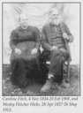

Brandon's Family Tree

Person Chart
Additional Names
| Additional Names | Name |
|---|---|
| Other Name | Caroline R. Hicks |
Parents
| Father | Date of Birth | Mother | Date of Birth |
|---|---|---|---|
 William Johnson William Johnson |
1819 |  Mary "Polly" Green Mary "Polly" Green |
ABT 1816 |
Partners
| Partner | Date of Birth | Children |
|---|---|---|
| Wesley Fletcher Hicks |
28 APR 1827 | John Wesley Hicks |
Person Events
| Event Type | Date | Place | Description |
|---|---|---|---|
 Birth Birth |
04 NOV 1834 | Arcadia, Sullivan Co., Tennessee, United States | |
| Marriage |
1851 | Sullivan, Tennessee, USA | |
| Place of Residence |
1880 | District 10, Sullivan, Tennessee, United States | Age: 45Marital Status: Married; Relation to Head of House: Wife |
| Place of Residence |
1900 | Civil District 10, Sullivan, Tennessee | Age: 65Marital Status: Married; Relation to Head of House: Wife |
| Death |
20 FEB 1908 | Arcadia, Sullivan, Tennessee, United States | Buried in Arcadia UMC Cemetery |
Notes
| WFandCarolineHicks http://trees.ancestry.com/rd?f=image&guid=4a8bcf71-fd32-4526-a69d-2a7c020b3f40&tid=17284951&pid=53 |
| caroline http://trees.ancestry.com/rd?f=image&guid=c870241d-178b-44ba-8ed0-977be14a3e54&tid=17284951&pid=53 |
Sources
| Description | Page | Quality | Information | Evidence |
|---|---|---|---|---|
| 1880 United States Federal Census, Ancestry.com Operations Inc |
Year: 1880; Census Place: District 10, Sullivan, Tennessee; Roll: 1281; Family History Film: 1255281; Page: 488A; Enumeration District: 025 | Don't know | Don't know | Don't know |
| 1900 United States Federal Census, Ancestry.com Operations Inc |
Year: 1900; Census Place: Civil District 10, Sullivan, Tennessee; Roll: 1601; Page: 8A; Enumeration District: 0110; FHL microfilm: 1241601 | Don't know | Don't know | Don't know |
| Ancestry Family Trees, Online publication - Provo, UT, USA: Ancestry.com. Original data: Family Tree files submitted by Ancestry members. |
Ancestry Family Tree | Don't know | Don't know | Don't know |
Media
Pictures

Wesley Hicks & Caroline Fitch